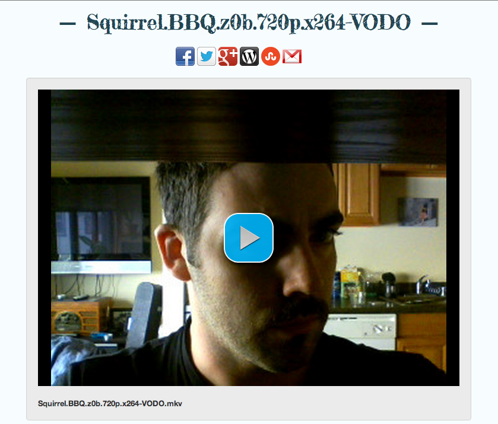

The Making of OneHash
Warning: Code! If you’d prefer to follow along using a gui, crack open the btapp.js visualizer.
OneHash is a demo to show off how to stream torrent content to your browser, with the source of the content being a torrent swarm, as opposed to the traditional server source.
If you’re using btapp.js, then you may have noticed that each file in a torrent has a property called streaming_url. Assuming you’ve included backbrace, this is simple to access despite being deeply nested.
var btapp = new Btapp();
btapp.connect();
btapp.live('torrent * file * properties streaming_url', function(url) {
//url can be used anywhere you might use a web server url to stream media
});Alternatively we can get the streaming url from the first file in the first torrent (assuming we have one added)
var url = btapp.get('torrent').at(0).get('file').at(0).get('properties').get('streaming_url');This url is served by the underlying Torque torrent client, which continues to download the torrent and pump the bits up to your player sequentially. And while a buffer is prioritized to allow for a better streaming experience, under the hood the torrent is still downloaded rarest-first, as much as performance allows.
Works with both video and audio, though there’s no media type checking, so you need to examine the file extensions to decide which dom element type to use.
btapp.live('torrent * file * properties streaming_url', function(url, properties) {
//get the full name of the file
var ext = properties.get('name');
//strip off the extension
var ext = name.substr(name.lastIndexOf('.') + 1);
//lets only support mp4 for now
if(ext === 'mp4') {
var video = $('<video></video>');
video.attr('src', url);
$('body').append(video);
}
});It should be noted that this streaming url can be used for normal browser downloads as well. This means that you could write a back-up service where everyone had bits and pieces of everything, but when someone clicked a link on your page to download their content, it would download into their browser like a normal download. The code to add those links to your page might look something like the following:
btapp.live('torrent * file * properties streaming_url', function(streaming_url) {
$('body').append('<a href="' + streaming_url + '"></a>')
});Well, that’s about it. Normal http streaming/downloading from a url that’s actually doing torrent downloads for you. Pretty cool and hopefully helpful to someone.
I’d love to hear your thoughts, and if you’re a programmer hoping to get started, feel free to drop me a line. I’m happy to help.
